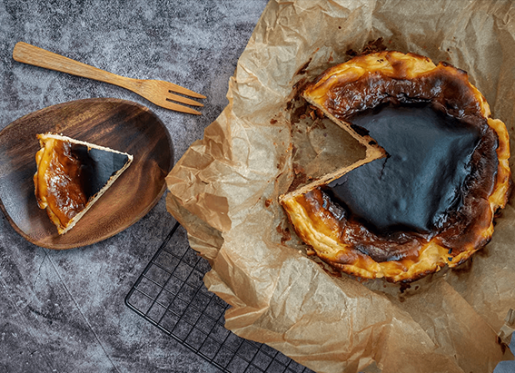

NATIONAL GEOGRAPHIC
How sport climbing is helping to revitalize a Greek island
TRAVEL
For more than 50 years, Antonis Kampourakis woke at dawn, strapped on fins and a mask, and dived deep into the Aegean Sea. His aim? To harvest the valuable sea sponges that sustained the Greek island of Kalymnos for centuries.
He’s just one of the many locals who have ties to this traditional work, which was often passed down in families through generations. When a catastrophic disease began decimating the sea sponges in 1986, the islanders’ main source of income also plummeted.
But then a new focus emerged, one that looks to the island’s landscape its steep cliffs, stalactite caves, fine limestone crags, and breathtaking sea views from the top.
Now the barren yet picturesque island is one of the world’s top spots for sport climbing, a type of rock climbing in which the routes are fixed with permanent anchors. The activity is helping to revitalize the local economy, drawing both amateur and expert adventurers, and is gaining global attention this year as a new Olympic event.
A culture immersed in the sea
Sea sponge harvesting a pursuit mentioned in Homer’s eighth-century B.C. epics has been practiced in Kalymnos since the 1800s. The sponge fishermen became legendary, descending to depths of more than 250 feet and using resourceful yet risky techniques, from free diving naked and weighted with a marble stone to breathing through a long hose that snaked to the surface.
“Although hard and dangerous, for me this job was a fun fair. I longed for daybreak to come to plunge into the sea,” says the 80-year-old Kampourakis. “For 52 years I kept diving for sponges, even a thousand times per day … but it was well-paid, I raised six daughters, bought houses for their families,” says Kampourakis, whose likeness is depicted on a local statue honoring the sponge divers.
While islanders were sponge hunting, merchants were selling the “Kalymnian gold” at far-flung markets. “There used to be 200 to 250 sponge boats, sailing all over Greece and the eastern Mediterranean,” says Nikolas Papachatzis, a sponge trader. “Now only a few remain.”
The decades-long intensive harvesting, the disease that hit the sponges in the 1980s, and the increased frequency of extreme climatic events since the 1990s all combined to nearly wipe out the sponge harvesting industry.
Now the local sponges are scarce, but surprisingly the sponge trade still flourishes. Because of the islanders’ know-how, sponges from elsewhere are processed here.
“Everything is done by hand, sponge by sponge; cleaning, washing, trimming,” says Papachatzis. Kalymnos accounts for 80 percent of sponge exports worldwide, and it imports sponges from tropical waters to satisfy the demand. “A Mediterranean sponge, though, has an unsurpassed quality and a 10-year life span,” he says.
As global efforts focus on reducing the use of plastic, natural sponges may seem more sustainable than artificial ones. Yet care should be taken with the remaining fragmented sponge populations, says Thanos Dailianis, a marine biologist at the Hellenic Centre for Marine Research.
“For sponge fisheries to continue, it is imperative to establish sound management schemes and endorse sustainable practices,” he says. “Cutting part of the sponge instead of wholly removing it from the substrate is proven to minimize harvesting impact, since it allows the remaining part to regenerate.” Dailianis also advocates for the designation of protected zones, which he says, “can have significant long term benefits by promoting restocking of depleted areas.”
The rise of sport climbing
While sponge harvesting was declining, an altogether different industry was emerging. Along the island’s coastline, high yellowish-orange cliffs rise from the sea dramatic features that caught the eye of Italian climber Andrea Di Bari when he vacationed on Kalymnos in 1996. Enchanted by the rock’s high quality, he returned the following year with climbing partners in tow to open up 43 routes.
Published images by photographer Andrea Gallo grabbed more climbers’ attention. Then Aris Theodoropoulos, a mountain guide, climbing instructor, and author of the Kalymnos Climbing Guidebook, collaborated with the municipality to help make Kalymnos a bona fide climbing destination.
“In 1999 we noticed some strange guys, loaded with gear, then saw their figures hanging on the rocks,” says George Hatzismalis, head of the Municipality Tourist Office. “Soon, we started looking for what interventions should be made in order for this to evolve: opening new routes, maintaining them, organizing a climbing festival.”
Comments :
- john Very good
- john Very good
Leave a Reply
Your email address will not be published. Required fields are marked*
Related posts:
-
The story behind Basque burnt cheesecake
Caramelised on top, jiggly in the centre, served with no garnish, tossed across the bar with nothing more than a fork the five-ingredient cheesecake from La Viña in San Sebastián, Spain, has managed to captivate chefs
View article -
 7 of the best American diners in the UK
7 of the best American diners in the UKFound in just about every big city and small town in the US, the diner is a beloved institution and a veritable cultural icon. Dishing up quick, affordable American classics, these colourful restaurants have fed hungry customers
View article -
 A taste of Sierra Leone, from sizzling fired bites to soothing fish stews
A taste of Sierra Leone, from sizzling fired bites to soothing fish stewsOver the centuries, Sierra Leone has been a place of refuge. The Limba peoples were drawn by whispers of a land untouched by turmoil in Africa’s Sahelian kingdoms, and other tribes set out for there too
View article